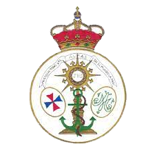
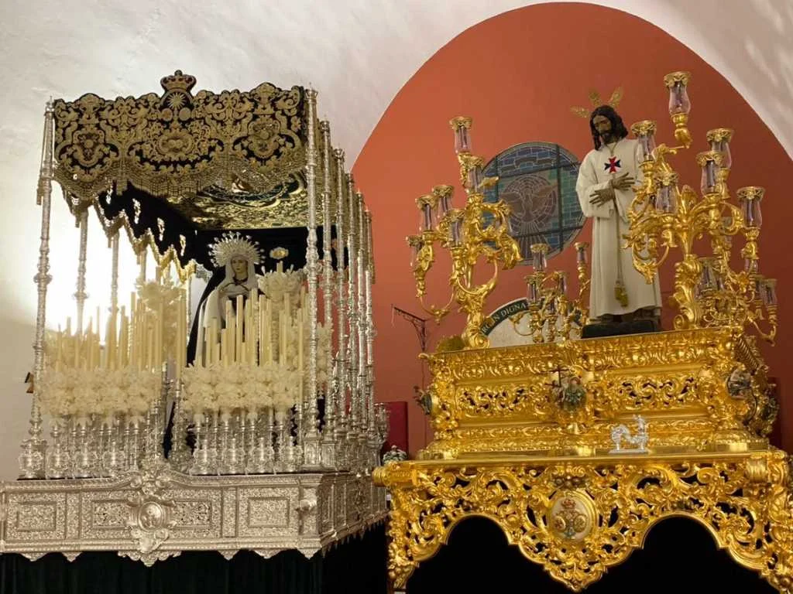

El Cautivo
Real y Trinitaria Hermandad del Santisimo Sacramento Nuestro Padre Jesús Cautivo y María Santísima de la Esperanza

Residencia Canonica
Parroquia Nuestra Señora del Rocío
Numero de hermanos
1673
Nazarenos
600
Autores
Nuestro Padre Jesús Cautivo es obra de Antonio Illanes realizado en el 1939. María Santísima de la Esperanza es obra de Antonio Illanes realizada en el 1940.
Capataces
Jesús Varela Peral en el Paso de Cristo y Jose Andrés Moreno Rubio en el Paso de Palio
Música
A.M. Ntro. Padre Jesús Cautivo, tras el Señor y A.F.C. Las Nieves de Olivares tras el Palio.
| Hora | Cruz de guía |
|---|---|
| 16:30 | Salida |
| - | Ruiseñor |
| - | Cisne |
| - | Canario |
| - | Virgen de los Reyes |
| - | Virgen de Montserrat |
| - | Virgen del Pilar |
| - | Avenida de la Cruz Roja |
| - | Virgen de Covadonga |
| 19:00 | Avenida de los Pirralos |
| 19:30 | Carlos I |
| - | Avenida de Andalucía |
| - | Calderón de la Barca |
| 20:00 | Divina Pastora |
| - | Santa Cruz |
| - | Plaza de Menéndez Pelayo |
| 20:30 | Santa María Magdalena |
| - | Plaza de la Constitución |
| 20:50 | Carrera Oficial |
| 21:30 | Mina |
| - | Plaza de la Mina |
| - | Purísima Concepción |
| - | Plaza del Emigrante |
| - | El Ejido |
| 22:00 | Romera |
| 23:00 | Reyes Católicos |
| - | Avenida de la Constitución |
| 00:30 | Entrada |